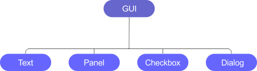

ImCreate
Versão 0.4.0
Esta seção descreve o novo fluxo de trabalho mais limpo, simples e eficiente para objetos do tipo GUI.
'Box' é uma classe especializada em criar um elemento visual(um quad) cuja propriedades podem ser definidas para ser usado como um painel ou botões.
A lista de propriedades busca seguir o padrão encontrado em CSS usado para formatação de sites por ser clara e intuitiva. As propriedades são, respectivamente:
- Posição
- Largura e Altura
- Preenchimento interno
- Bordas
- Espessura de bordas
- Cor de borda
- Máscaras de bordas
- Arredondamento de extremidades
- Preenchimento interno
- Margens
- Cor de plano de fundo
- Imagem de plano de fundo
Uma instância de 'Box' disponibiliza a definição de funções para manipulação de determinados eventos(como sobrepor o mouse e selecionar) por meio de atríbutos do tipo std::function desde que tenham um retorno de chamada do tipo void e parêmtro de igual tipo. Os atríbutos e eventos que os manipulam são listados a baixo:
- initial: o atríbuto initial espera que dentro de seu escopo seja determinada o comportamento/formatação padrão de determinado objeto(podendo ser qualquer objeto dentro do mesmo escopo em que initial é definido). Esse é um atríbuto que muda o estado do objeto referido dentro de seu escopo sempre que nenhum evento para o objeto chamador estiver sendo processado.
- over: o atríbuto que define o comportamento para objetos referidos em seu escopo sempre que o mouse estiver sobre a instância que chama 'over'.
- click: o atríbuto que define o comportamento para objetos referidos em seu escopo sempre que um clique com o botão esquerdo do mouse for detectado sobre a instância que chama 'click'
Objetos da classe GUI mantém uma relação de herança de modo que objetos filhos possam compartilhar propriedades em comum e em relação ao seu objeto pai. As seguintes propriedades são descritas:
- Posição relativa a posição do objeto pai
- Dimensão proporcional a dimensão do objeto pai
- Visibilidade relativa a visibilidade do objeto pai
O fluxo de renderização e processamento torna-se simples quando a biblioteca armazena toda instância(especializada) da classe GUI em um vetor de ponteiros de modo que processar todos os eventos disponíves possa ser realizado pela chamada as seguintes funções membro estáticas:
- GUI::RenderWithColorID(): essa função é crucial par que um objeto GUI tenha utílidade. Ao renderizar cada instância criada com uma cor especifica, a biblioteca torna-se capaz de ler do buffer de cor e determinar sobre qual objeto o mouse está para então chamar o respectivo evento esperado(note, o processamento de eventos não é tarefa de GUI::RenderWithColorID()).
- GUI::ColorPicking(): como o nome sugere, a função usa a tecnica de seleção de cores para ordenar, mover, realçar(definindo over), ou tornar a configuração inicial(definindo initial). Note: objetos filhos não serão processados por esta função.
- GUI::MouseEvent(): Essa função é responsável por processar e válidar o evento de seleção de um objeto pelo mouse.
Um objeto pode ter uma tecla atríbuida (como a maioria dos eventos de interface gráfica são projetados para serem disparados pelo mouse, atríbuir uma tecla é útil como um atalho para exibição do objeto, contudo, qualquer comportamento pode ser definido no escopo do atríbuto membro keypress. Exemplos serão apresentados). Eventos de teclado para todos objetos podem ser processado a partir de uma única chamada à GUI::KeyboardEvent().
A renderização real de objetos do tipo GUI é feita pela chamada única à GUI::Render(). Note: objetos podem ser renderizados e ter seus eventos processados individualmente por meio a chamadas explicitas as funções membros correspondente, contudo, faça isso apenas se for estritamente necessário remover tal objeto do vetor interno de objetos(o que raramente deve vir a acontecer. Exemplos serão apresentados posteriormente).
Até aqui uma visão abstraída de como funciona o fluxo de trabalhao com objetos de interface de usuário foi apresentada. Ademais, apresenta-se o real implementação, levando em conta parâmetros de funções(omitidos para diminuir o assunto técnico) e a configuração dos ativos compartilhados pelo biblioteca(como sombreadores e texturas) além de como deve ser o corpo da função principal.
-
Próxima tarefa:
- Trazer exemplos de códigos(stack/heap).
Atualizado em 25/05/2022
Versão 0.3.0 - Legada, novas versões mudam drasticamente o fluxo de trabalho interno.
Interface Grágica de Usuário
Introdução
Os recursos de interface gráfica de usuário - GUI - fazem parte da biblioteca 'Imcreate' sendo inteiramente desenvolvida usando os príncipios de renderização OpenGL.
Para começar a usar objetos do tipo GUI, deve-se fazer a inclusão do arquivo de cabeçalho em "libraries/GUI/GeneralGUI.hpp".
Todos os objetos de interface gráfica compartilham funções e dados em comum com a classe base GUI. Dado tal, cada especialização da classe possui sua lógica própria de construção.
Objetos do tipo GUI são mantidos por uma pilha interna para chamadas de renderização e processamento da fila de eventos sejam gerenciadas por uma única chamada de função sendo respectivamente:
- GUI::stackPicking(): para habilitar a seleção de objetos do tipo GUI.
- GUI::stackRender(): para renderizar todos objetos do tipo GUI criados.
- GUI::stackPollEvent(SDL_Event* event): para processar os eventos de todos objetos GUI criados.
Salvo alguns, criar objetos do tipo GUI requer apenas o trabalho de construção sem necessitar preocupar-se com seu tratamento após isso.
Relacionamento
Todo objeto do tipo GUI pode manter uma relação pai-filho com outro objeto. Isso permite que objetos tenha sua posição, dimensão e visibilidade relativos ao objeto pai. Como um relacionamento um para muitos, o objeto pai será sempre o último definido.
Para tornar um objeto agregado a outro, após construir ambos objetos, chame a função pública push(GUI* guiObject):
father.push(&children);
Exemplo:
Panel panel000(50.0f, 50.0f, 20.0f, 45.0f, 6.0f, vec4<float>(0.2f, 0.19f, 0.22f), vec4<float>(0.65f, 0.34f, 0.2f), vec4<float>(0.2f, 0.2f, 0.2f));
Text title000("../assets/fonts/Humnst777.ttf", 18.0f, 50.0f, 50.0f, vec3<float>(0.9f), "PANEL000", ON_HEADER);
panel000.push(title000);
O código anteriror criar o seguinte resultado:

"Text" é mais um tipo de objeto GUI. Seu construtor aceita um caminho para fonte a ser usada, o tamanho da fonte em pixels, sua posição, cor da fonte, a string a ser exibida e o layout de posicionamento.
Eventos
Um aspecto crucial de uma interface de usuário é operar eventos com base na ação do usuário. Eventos especiais podem ser criados
a partir de um função lambda passada como parâmetro da função setUserEvent([&](){ /***meu evento***/ }).
Exemplo:
...
title000.setUserEvent([&](){
panel000.setHidden(true);
});
O bloco de código anterior irá esconder o objeto painel000 quando o usuário clicar sobre o título do painel.
Topologia
A relação hereditária das classes de interface gráfica são represnetadas no diagrama abaixo:
Usando textos
Textos são a essência da interface de usuário. A classe Text é especializada em renderizar textos com suporte a unicode. Um objeto Text pode associar-se a outros objetos GUI e sua construção é ser tal como a definição a seguir:
Text text("Humnst777.ttf", 18.0f, 50.0f, 50.0f, vec3(0.9f), "Eu sou um simples texto", ON_HEADER);
Onde os parâmetros são, em ordem respectiva:
- std::string: o nome da fonte(espera-se que a fonte esteja no diretório "assets/fonts".
- float font_size: o tamanho da fonte em pixels.
- float x: a proporção de posicionamento x.
- float y: a proporção de posicionamento y.
- vec3<float> color: a cor do texto.
- std::string: os caractéres a serem escritos.
- GUI_PanelLayout: o layout de painel(se pertencer a um painel).
Criando Painéis
Painéis são idealmente contâiners para um grupo de objetos. Por padrão, painéis são criados com a região do cabeçalho como a área de eventos - como agarrar e selecionar.
Para grande maioria dos casos, questões visuais e de posicionamento são decidas no construtor do objeto:
Panel panel000(float x, float y, float w, float h, float thickness, vec4<float> backgroundColor, vec4<float> headerColor, vec4<float> borderColor, GUI_PanelLayout panelLayout = ON_WINDOW);
Os parâmetros x, y e w, h dizem respeito ao posicionamento e dimenções do painel respectivamente dados em porcentagem.
Há ainda outra versão do construtor que recebe escalas de resolução para serem tratadas de acordo com a mudança de tamanho da janela da aplicação:
Panel panel000(float x, float y, std::vector<vec2<float>> scales, float thickness, vec4<float> backgroundColor, vec4<float> headerColor, vec4<float> borderColor, GUI_PanelLayout panelLayout = ON_WINDOW);
O parâmetro thickness é a espessura da borda.
Os parâmetros backgroundColor, headerColor, borderColor são como intuitivamente seus nomes definem - note que o canal alfa pode ser especificado.
O parâmetro panelLayout é onde um objeto deve ser posicionado se for atribuído à outro objeto. Os tipos de layout são:
Exemplo
Panel panel000(50.0f, 50.0f, 20.0f, 45.0f, 6.0f, vec4<float>(0.2f, 0.19f, 0.22f), vec4<float>(0.65f, 0.34f, 0.2f), vec4<float>(0.2f, 0.2f, 0.2f));
O código anteriror cria o seguinte resultado:

A região com tom alaranjado é a área que denota o cabeçalho, enquanto a região com tom cinza define o corpo do painel.
Texturas
Painéis podem receber uma imagem de fundo ao invés de apenas uma cor uniforme. Para isso deve-se instânciar um painel normalmente - defindo até mesmo sua cor uniforme(ela será ignorada se uma textura for fornecida) - e após bastas chamar a função addTexture(std::string path, std::string uniformName, uint index)
Exemplo:
panel000.addTexture("../assets/textures/alpha/ranger.bmp", "img", 0);
O código anterir cria o seguinte resultado:

Obs.: O nome uniforme sempre deve ser "img" seguido do indíce 0 ou então o sombreador irá assumir um comportamento indeterminado.
Obs².: addTexture é uma função que pertence a classe base SRW, o que indica a dependência de GUI por SRW. Essa informação pode ser útil para flexibilizar as possibilidades de programação, mas painéis não foram projetados para usaram mas do que uma chamada de addTexture - se o fizer, a última chamada será válida - ou de qualquer outra função da classe SRW. Apesar de ser possível, não é legal.
Checkbox
Checkbox são objetos úteis para sinalizar visualmente comportamentos binário, ora estão ativos ora estão desativados.
Não existem muitas coisas especiais para um checkbox, a funcionalidade binária deve ser implementada arbitráriamente pelo programador seguindo o princípio de ativar/desativar na callback definada pela chamada à setUserEvent.
Exemplo:
Panel panel000(50.0f, 50.0f, 20.0f, 45.0f, 6.0f, vec4<float>(0.2f, 0.19f, 0.22f), vec4<float>(0.65f, 0.34f, 0.2f), vec4<float>(0.2f, 0.2f, 0.2f));
Text title000("Humnst777.ttf", 18.0f, 50.0f, 50.0f, vec3<float>(0.9f), "Panel000", ON_HEADER);
panel000.push(title000);
Checkbox cbxPinPanel000(98.0f, 50.0f, ON_HEADER);
cbxPinPanel000.setUserEvent([&](){
cbxPinPanel000.setOn(!cbxPinPanel000.getOn());
panel000.setPin(!panel000.getPin());
});
panel000.push(&cbxPinPanel000);
O bloco de código anterior posicionará uma checkbox no cabeçalho de panel000. Ao marcar a checkbox, o painel ficará fixo em sua posição atual não podendo ser movido até que a checkbox seja desmarcada.

Checkbox podem ser usadas em conjunto assumindo uma relação semântica de ativação. Isso é útil para ter apenas uma opção de uma seção de opções ativa. Para isso é preciso definir um conjunto de checkbox como um grupo:
Panel panel000(50.0f, 50.0f, 20.0f, 45.0f, 6.0f, vec4<float>(0.2f, 0.19f, 0.22f), vec4(0.65f, 0.34f, 0.2f), vec4<float>(0.2f, 0.2f, 0.2f));
panel000.addTexture("../assets/textures/alpha/ranger.bmp", "img", 0);
Text title000("../assets/fonts/Humnst777.ttf", 18.0f, 50.0f, 50.0f, vec3<float>(0.9f), "PANEL000", ON_HEADER);
Text txtTex0("../assets/fonts/Humnst777.ttf", 12.0f, 20.0f, 3.0f, vec3<float>(0.9f), "TEX0", ON_BODY);
Text txtTex1("../assets/fonts/Humnst777.ttf", 12.0f, 92.0f, 3.0f, vec3<float>(0.9f), "TEX1", ON_BODY);
Checkbox cbxPinPanel000(98.0f, 50.0f, ON_HEADER);
Checkbox cbxTex0(10.0f, 2.0f, ON_BODY);
Checkbox cbxTex1(80.0f, 2.0f, ON_BODY);
Group groupTexOptions;
groupTexOptions.checkbox.push_back(&cbxTex0);
groupTexOptions.checkbox.push_back(&cbxTex1);
title000.setUserEvent([&](){
panel000.setHidden(true);
});
cbxPinPanel000.setUserEvent([&](){
cbxPinPanel000.setOn(!cbxPinPanel000.getOn());
panel000.setPin(!panel000.getPin());
});
cbxTex0.setUserEvent([&](){
groupTexOptions.doUnique(cbxTex0.getID());
cbxTex0.setOn(!cbxTex0.getOn());
if(cbxTex0.getOn())
panel000.addTexture("../assets/textures/brick_wall/yellow_bricks_diff_1k.jpg", "img", 0);
else
panel000.addTexture("../assets/textures/alpha/ranger.bmp", "img", 0);
});
cbxTex1.setUserEvent([&](){
groupTexOptions.doUnique(cbxTex1.getID());
cbxTex1.setOn(!cbxTex1.getOn());
if(cbxTex1.getOn())
panel000.addTexture("../assets/textures/brick_wall/yellow_bricks_nor_gl_2k.jpg", "img", 0);
else
panel000.addTexture("../assets/textures/alpha/ranger.bmp", "img", 0);
});
panel000.push(&cbxPinPanel000);
panel000.push(&title000);
panel000.push(&txtTex0);
panel000.push(&txtTex1);
panel000.push(&cbxTex0);
panel000.push(&cbxTex1);
O código anterior resultará nas seguintes imagens:

Escolher entre "Tex0" e "Tex1" ou nenhum alternará a textura exibida no corpo do painel.
A parte diferêncial nesse código é a instanciação do objeto groupTexOption. Uma vez que um objeto "Group" é criado, devemos atribuir os objetos checkbox desejados a pilha interna do grupo por meio do membro checkbox, e então dentro da callback de evento de cada checkbox chamar a função doUnique pertencente ao objeto do tipo Group passando o identificador do checkbox em questão como parâmetro. O que essa função faz é desinalizar todos os outros checkbox do grupo uma vez que o atualmente clicado esteja ativo.
Páginas de diálogo
Diálogos são comumentes usados em jogos de RPG. ImCreate implementa uma classe para a criação de elementos de diálogo de fácil utilização.
A criação de um objeto Dialog é feito da seguinte maneira:
Panel panel(50.0f, 50.0f, 80.0f, 20.0f, 2.0f, vec4(1.0f), vec4(0.3f), vec4(1.0f), ON_WINDOW);
Dialog dialog("Oldlondon.ttf", 24.0f, vec3(1.0f), "Humnst777.ttf", 18.0f, vec3(0.1f), "history.txt", &panel);
dialog.flipPages("Capítulo I - Prelúdio");
Objetos Dialog são projetados para funcionar como parte de um objeto Panel e portanto devem ter um painel devidamente configurado antes de qualquer operação com objeto Dialog.
Para instânciar um objeto Panel verifique aqui. Painéis com escala de resolução várivel não são compativeis.
Os parâmetros para instânciação de Dialog são:
A função membro flipPages(std::string) espera um ponto de entrada(normalmente o título de uma seção, capítulo...). Todo conteúdo dentro do arquivo de texto será lido até encontrar o caractere '-' e cada quebra de linha significa uma nova pagina de diálogo.
Um arquivo de texto deve ser escrito da seguinte forma:
Cápitulo I - Prólogo
Descreve o começo de uma grande aventura...
-
Cápitulo I - Região concluída
Parabéns, você está apto a seguir em frente.
-
Após '-', você pode inserir novos pontos de interrupção, para uma nova seção ou página de diálogo.
Por meio da função keyboardEvent(SDL_Event* event) é possível controlar o avanço e recuo de páginas usando as teclas para direita/enter e para esquerda respectivamente.
O aspecto visual de um objeto Dialog é pode ser visto aqui.